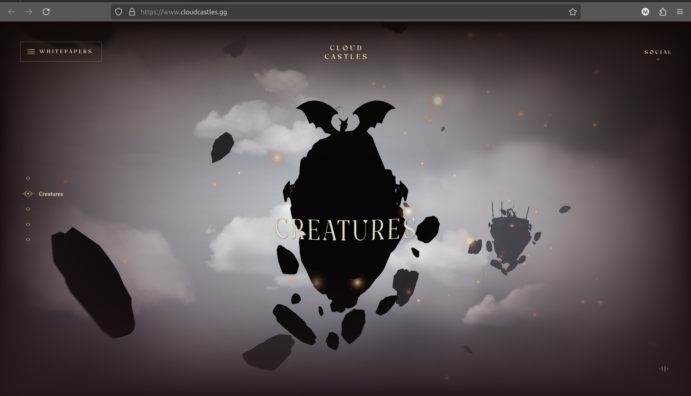

RO.ME is a very interesting webgl demo! I really like the nostalgic music it plays in the background and the way the camera moves around the scene. It feels like a story-mode game. It was very surprising to find out that it was made more than a decade ago and the graphics and everything still look amazing. I think it definitely had a major impact on what can be done in the browser just by using webgl. I believe the time this web game was made was also the time when I used to play online web games on miniclip.com and now I know how they were made as well.
Technology: Three.js, WebGL, JavaScript, HTML/CSS, AJAX
 Comparison: Another webgl demo that I found was the Cloud Castles. It displays floating rocks with each rock having a warrior or dragon or something along those lines on top of them. The interaction with this demo is very limited compared to RO.ME as you can only move from one castle to another. The camera view is fixed and it doesn't have a video like RO.ME. The graphics are pretty modern and I relly like the setting of the demo mostly because I really like mythical creatures, especially dragons. This demo reminds me a lot of Game of Thrones and The Elder Scrolls video game series.